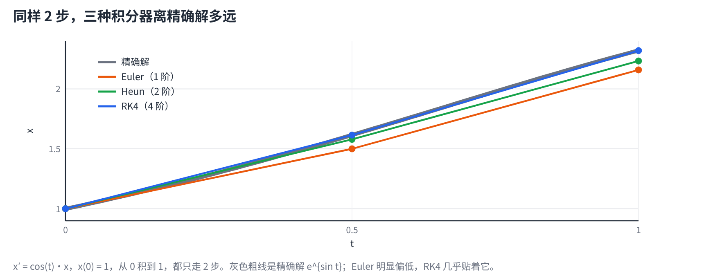
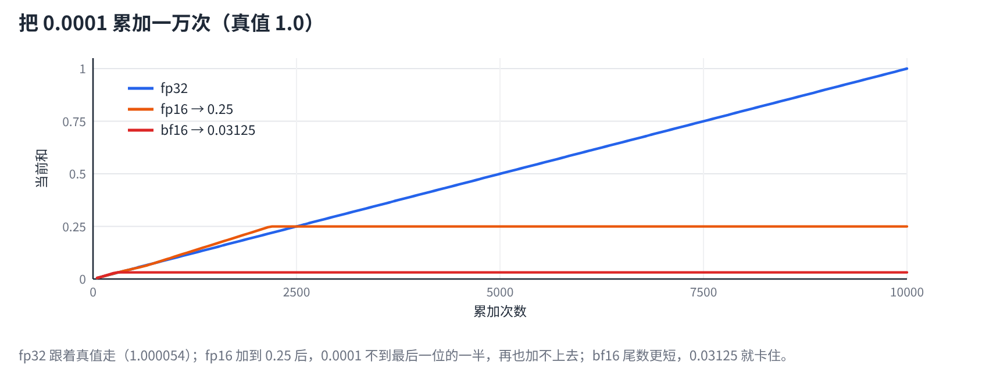
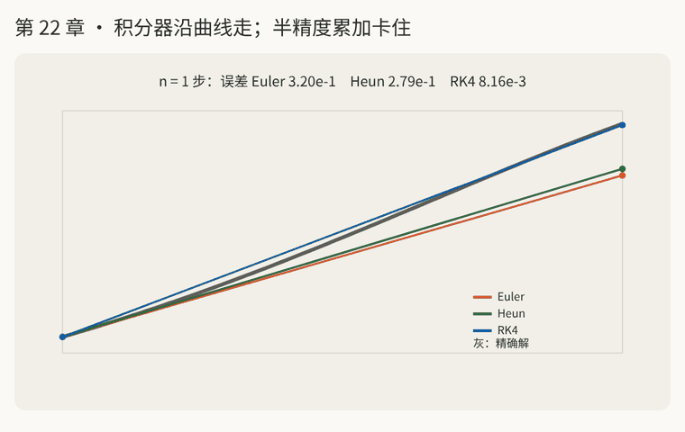

第 22 章 · 数值计算：积分器的阶、softmax 的上溢、半精度的累加和病态问题
本地运行
git clone https://github.com/wikieden/math-and-eval-stats
cd math-and-eval-stats/code/notebooks
pip install jupyterlab torch numpy
jupyter lab ch22_numerics.ipynb也可以下载后直接用 VS Code 打开 .ipynb 运行。需要 GPU 的章节在 Colab 里选「代码执行程序 → 更改运行时类型 → GPU」。
本章回答：扩散模型"采样步数"和 ODE 积分器的阶数有什么关系？softmax 为什么要先减最大值？训练用 bf16、推理用 fp16，各自会在哪里出问题？什么样的计算天生就不准？
讲解日期：2026-11-25 · 上一章：第 21 章 动力系统与控制的数学 · 下一章：第 23 章 MDP 与 Bellman 的完整推导
对应原文：MIT 6.S184 讲义diffusion-models/materials/text/papers/mit-6s184-flow-matching-diffusion-notes-2506.02070.txt（用 ODE 积分器采样一节）；混合精度见《PyTorch 从里到外》第 26 章；softmax 饱和见《从零读懂 Transformer》第 7 章
本章缩写：Euler = 欧拉法（一阶）；Heun = 休恩法（二阶，预估–校正）；RK4 = Runge–Kutta 4th order（龙格–库塔四阶）；fp16 / float16 = 半精度浮点（1 符号、5 指数、10 尾数）；bf16 / bfloat16 = brain floating point 16（脑浮点：1 符号、8 指数、7 尾数）；fp32 = 单精度；logsumexp = log Σ exp；κ = 条件数。全部缩写见 附录 · 缩写与术语表
讲解
第一步：ODE 积分器的阶：步数翻倍，误差降多少（2026-11-25）
类比：用折线逼近一条曲线。 一段只用起点的斜率（欧拉），走得越远偏得越多；多看几个点的斜率再走（Heun、RK4），每一步都更贴曲线。
| 方法 | 每步看几次斜率 | 阶 | 步数翻倍，误差 |
|---|---|---|---|
| Euler | 1 | 1 | ÷2 |
| Heun | 2 | 2 | ÷4 |
| RK4 | 4 | 4 | ÷16 |
例子：x' = cos(t)·x，x(0) = 1，积到 t = 1（精确解 e^{sin 1}）：
| 步数 | Euler | Heun | RK4 |
|---|---|---|---|
| 5 | 6.37e-2 | 1.56e-2 | 1.55e-5 |
| 10 | 3.15e-2 | 4.01e-3 | 9.67e-7 |
| 20 | 1.56e-2 | 1.02e-3 | 6.01e-8 |
和扩散采样的关系：扩散 / flow 的采样就是解一个 ODE（概率流 ODE、flow 的速度场）。每一步"看一次斜率" = 调一次网络（一次 NFE）。所以比较采样器要按网络调用次数比：Heun 18 步 = 35 次调用（EDM，扩散模型第 11 章）、DPM-Solver 用二阶公式让 10–20 次调用够用（第 8 章）。

图 22-1 · 灰色粗线是精确解；三种方法都只走 2 步，Euler 明显偏低，RK4 几乎贴着精确解一句话：p 阶积分器误差 ∝ (1/步数)^p；扩散采样的"步数"就是 ODE 积分的步数，高阶方法用更少的网络调用达到同样精度。
第二步：softmax 和 logsumexp：先减最大值（2026-11-25）
类比：比较几个人的身高差，不用先量他们离地心多远。
e^{1000} 在 float64 里就上溢成 inf，inf/inf = nan：
| 算法 | softmax([1000, 1001, 1002]) |
|---|---|
| 直接算 | [nan, nan, nan] |
| 先减最大值 | [0.0900, 0.2447, 0.6652] |
减掉同一个数，分子分母约掉，结果不变；最大的指数变成 e⁰ = 1，不会上溢。logsumexp([1000, 1001, 1002]) = 1002.4076。交叉熵 loss、注意力、MPPI 权重（第 16 章）里都用这个技巧。
一句话：softmax / logsumexp 先减最大值，结果不变、不会上溢。
第三步：浮点精度：半精度为什么不能直接累加（2026-11-25）
类比：用只能读到"元"的秤称一根头发，加一万根也称不出来。
浮点数的有效数字有限：一个大数加一个小于它"最后一位"一半的小数，等于没加。
例子：把 0.0001 加一万次（真值 1.0）：
| 精度 | 结果 |
|---|---|
| float32 | 1.000054 |
| float16 | 0.250000（加到 0.25 以后，0.0001 小于半个最后一位，再也加不上去） |
| bfloat16 | 0.031250（尾数只有 7 位，更早卡住） |
| 格式 | 指数位 | 尾数位 | 最大值 | 有效数字 |
|---|---|---|---|---|
| fp16 | 5 | 10 | 65504 | 约 3 位 |
| bf16 | 8 | 7 | 约 3.4e38（和 fp32 一样） | 约 2–3 位 |
| fp32 | 8 | 23 | 约 3.4e38 | 约 7 位 |
工程上：混合精度训练用 bf16 / fp16 做矩阵乘（快），但累加器、优化器状态、主权重用 fp32；fp16 的范围小，还要 loss scaling 防止梯度下溢（PyTorch 第 26 章）。bf16 范围大不用缩放，但精度更低。

图 22-2 · 横轴累加次数，纵轴当前和；fp32 跟着真值走，fp16 在 0.25、bf16 在 0.03 处变平一句话：低精度下大数加小数会被吞掉；矩阵乘可以用 bf16 / fp16，累加和优化器状态要留在 fp32。
第四步：相减相消与病态问题（2026-11-25）
相减相消：两个几乎相等的数相减，前面相同的有效数字全部抵消，剩下的都是舍入误差。
| x | 1 − cos x（直接算） | 2 sin²(x/2)（换个写法） |
|---|---|---|
| 10⁻³ | 5.000000e-7 | 5.000000e-7 |
| 10⁻⁸ | 0（cos x 在 float64 里就是 1） | 5.0e-17 |
换成数学上等价、但不做相减的写法（log1p、expm1 也是同一个思路）。
病态问题：问题本身就对输入敏感（第 12 章的条件数），和算法无关。Hilbert 矩阵 \(H_{ij} = 1/(i + j + 1)\)：
| 大小 | 条件数 |
|---|---|
| 4×4 | 1.6e4 |
| 8×8 | 1.5e10 |
| 12×12 | 1.6e16（float64 只有约 16 位有效数字，解出来基本没有正确的位） |
场景代码：PyTorch 里的稳定写法（真实库的写法；本书环境没装 torch，没跑过）：
torch.logsumexp(z, dim=-1) # 内部先减最大值
F.log_softmax(z, dim=-1) # 不要写成 torch.log(F.softmax(z))，后者小概率会变成 log 0
torch.log1p(x); torch.expm1(x) # x 很小时代替 log(1 + x)、exp(x) − 1
with torch.autocast("cuda", dtype=torch.bfloat16): y = model(x) # 矩阵乘用 bf16，loss 和优化器仍是 fp32
一句话：两个接近的数别直接相减，换等价写法；条件数接近 1/机器精度的问题，什么算法都救不了。
动画演示：积分器沿曲线走，半精度卡住

可交互版：animations/22-numerics.html（下拉切换"积分器 / 累加"；滑块调步数或累加次数）。
怎么看：
- 积分器：灰色是精确解，三种方法各自画折线；步数从 2 拖到 20，Euler 慢慢贴近，RK4 两三步就几乎重合（第一步）；
- 累加：三条线分别是 fp32、fp16、bf16 的当前和；fp16、bf16 在某处变平，右上角显示此时 0.0001 相对于"最后一位"有多小（第三步）。
练习与作答记录
题 1（第一步）：一个 3 阶方法用 10 步时误差是 8 × 10⁻⁴，用 20 步大约是多少？用 40 步呢？
作答：（待作答）
题 2（第二步）：算 logsumexp([−1000, −1000])（保留 4 位）。直接算 log(e^{−1000} + e^{−1000}) 会出什么问题？
作答：（待作答）
题 3（第三、四步）：（a）在 fp16 里 2048 + 1 等于多少？为什么？（b）\(\sqrt{x + 1} - \sqrt x\) 在 x = 10¹² 时直接算会出什么问题？怎么改写？
作答：（待作答）
口诀
积分器有阶数，翻倍步数误差除二的 p 次方，采样步就是积分步；
softmax 先减最大值，结果不变不上溢；
半精度加小数会被吞，累加和优化器留 fp32；
相近数别相减，病态问题算法救不了。
本章复习卡片
ST79（积分器的阶与扩散采样步数）、ST80（softmax / logsumexp 的稳定写法）、ST81（fp16 / bf16 / fp32 的区别与混合精度的原则）、ST82（相减相消与病态问题）。练习做完后，按答错、卡住的地方补上。
附录 · 延伸阅读
留给以后深入学习用，不影响本章主线。★ 是建议先读的。
推荐阅读
| 读什么 | 读哪里 | 读它为了什么 |
|---|---|---|
| ★ 《PyTorch 从里到外》第 26 章 混合精度 | 全章 | autocast、loss scaling、bf16 与 fp16 的取舍 |
| ★ 《从零读懂扩散模型》第 8、11 章 | DPM-Solver、EDM | 高阶 ODE 解法在采样里的用法 |
| 《从零读懂 Transformer》第 7 章 | 全章 | softmax 饱和、为什么要缩放 |
| MIT 6.S184 讲义 | ODE / SDE 采样一节 | 用 Euler / Heun 从 flow、扩散模型采样 |
| Higham《Accuracy and Stability of Numerical Algorithms》（本地未归档） | 第 1–4 章 | 浮点误差分析的标准教材 |
数学原理
- 局部误差与全局误差：p 阶方法每步的局部误差 O(h^{p+1})，走 1/h 步累积成全局误差 O(h^p)。
- 浮点数的相对精度：机器精度 ε = 2^{−尾数位数}：fp32 约 1.2e-7、fp16 约 9.8e-4、bf16 约 7.8e-3。a + b 中 b < ε·|a|/2 时结果仍是 a。
- 相减相消的放大：x − y 的相对误差约 (|x| + |y|)/|x − y| × ε；x ≈ y 时这个倍数很大。
- logsumexp 的界：max z ≤ logsumexp(z) ≤ max z + log n，所以它是 max 的"平滑版"。
公式清单
| 公式 | 意思 |
|---|---|
| 误差 \(\propto h^p\) | p 阶积分器 |
| \(\text{softmax}(z) = e^{z - \max z}/\sum e^{z - \max z}\) | 稳定 softmax |
| \(\log\sum e^z = \max z + \log\sum e^{z - \max z}\) | 稳定 logsumexp |
| \(1 - \cos x = 2\sin^2(x/2)\) | 避免相消的改写 |
| 机器精度 fp32 ≈ 1.2e-7、fp16 ≈ 9.8e-4、bf16 ≈ 7.8e-3 | 三种格式的相对精度 |
代码对照：把本章的数字用代码算一遍
代码在仓库本地
math-and-eval-stats/solutions/chapter-code/ch22_numerics.py，配套测试tests/test_ch22.py：
bash cd math-and-eval-stats/solutions/chapter-code uv run python ch22_numerics.py uv run pytest tests/test_ch22.py
讲义 ↔ 代码：
| 讲义 | 公式 | 写法 | 跑出来 |
|---|---|---|---|
| 第一步 积分器 | Euler / Heun / RK4 | integrate(m, n) |
10 步：3.15e-2 / 4.01e-3 / 9.67e-7 |
| 第二步 softmax | 减最大值 | softmax_stable(z)、logsumexp(z) |
[0.09, 0.2447, 0.6652]；1002.4076 |
| 第三步 累加 | 不同精度 | accumulate(np.float16)、accumulate_bf16() |
0.25、0.03125 |
| 第四步 相消 | 改写 | cancel(1e-8) |
0 vs 5e-17 |
| 第四步 病态 | 条件数 | hilbert_cond(12) |
1.6e16 |
关键几行：
k1 = f(t, x); k2 = f(t + h/2, x + h/2*k1); k3 = f(t + h/2, x + h/2*k2); k4 = f(t + h, x + h*k3)
x = x + h / 6 * (k1 + 2*k2 + 2*k3 + k4) # RK4 一步
e = np.exp(z - z.max()); e / e.sum() # 稳定 softmax
b = ((b + 0x7FFF + ((b >> 16) & 1)) & 0xFFFF0000) # 模拟 bf16：截掉 fp32 的低 16 位（就近偶数舍入）
代码里才看得到的 3 件事：
- NumPy 没有 bfloat16：代码把 float32 的位模式截掉低 16 位来模拟 bf16（bf16 就是 fp32 的高 16 位），每次加法后都重新截一次。
np.errstate屏蔽警告：直接算 softmax 时 e^{1000} 上溢会报 RuntimeWarning，代码只是为了演示才故意这么写。- RK4 每步调 4 次 f：比较"20 步 RK4"和"20 步 Euler"不公平；按调用次数比，要拿 RK4 的 5 步和 Euler 的 20 步比（误差 1.55e-5 vs 1.56e-2）。
自己改一改（不影响练习答案）：
- 把累加的步长从 0.0001 改成 0.01，float16 能加到多少？
- 给
integrate加一个"中点法"（2 阶），看误差是不是也按 ÷4 下降。